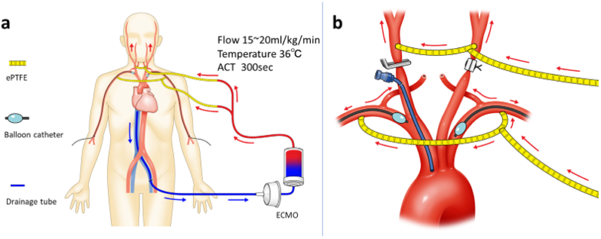

1. 概要 ― Brain isolation technique とは
Brain isolation technique は、弓部大動脈人工血管置換術(total arch replacement: TAR)などで、脳へ行く血流を病変大動脈の血流から切り離すための考え方です。日本語では「脳隔離法」「機能的脳隔離法」と呼ばれることがあります。
通常の 選択的順行性脳灌流(SACP: selective antegrade cerebral perfusion) は「脳虚血を防ぐ」ことが中心です。一方、brain isolation technique はそれに加えて、shaggy aorta・可動性粥腫・弓部粥状硬化から生じる塞栓が脳へ飛ぶことを避ける目的が強くなります。
目的 1
低体温で脳代謝を下げ、SACPで酸素化血を送り、脳虚血時間を延ばします。
目的 2
弓部分枝を遮断・分離し、粥腫や血栓が脳血管へ流入する経路を断ちます。
目的 3
弓部を開放しても脳灌流を保つため、遠位吻合や分枝再建を落ち着いて行えます。
2. なぜ弓部置換で脳保護が難しいのか
弓部大動脈は 腕頭動脈、左総頸動脈、左鎖骨下動脈が分岐する場所です。ここを人工血管に置換するには、いったん頭頸部へ向かう血流を操作しなければなりません。
脳障害の主な3要素
| 要素 | 起こり方 | 対策 |
|---|---|---|
| 脳虚血 | 循環停止・低灌流で酸素供給が不足する | 低体温、SACP、NIRS、灌流圧管理 |
| 塞栓 | 粥腫・血栓・空気・石灰化片が脳血管へ流入する | brain isolation、送血部位選択、de-airing、no-touch操作 |
| 再灌流障害 | 虚血後の再灌流で浮腫・炎症が起こる | 過灌流を避ける、温度・血圧・酸素化の調整 |
特に意識する症例
- shaggy aorta: 大動脈内膜にびまん性の粥腫・不整な debris が多い。
- mobile atheroma: 可動性粥腫があり、カニュレーションや遮断で剥がれやすい。
- 高度石灰化・弓部分枝狭窄: 直接カニュレーションや遮断そのものが塞栓源になりうる。
- 急性大動脈解離: 真腔・偽腔、分枝灌流、送血部位の判断が難しい。
3. 回路イメージ ― 脳循環を大動脈から切り離す
施設や術式により細部は異なりますが、概念は「脳へ行く回路」と「体幹へ行く回路」を分け、弓部病変からの塞栓が頭頸部へ流れないようにすることです。

出典: Seguchi R, Kiuchi R, Horikawa T, et al. Novel Brain Protection Method for Zone 0 Endovascular Aortic Repair with Selective Cerebral Perfusion. Annals of Vascular Diseases. 2021;14(2):153-158. PMCID: PMC8241544 の Figure 1 を表示サイズのみ調整して転載。 PMC本文のCreative Commonsライセンス表記に従い、出典・リンク・変更点を明記しています。
4. 手術の流れで理解する
ここでは「高度粥状硬化を伴う弓部大動脈瘤に対するTAR」を想定した概念的な流れを示します。実際には術者・施設・病変により順序が変わります。
実習で見るポイント
- 「どこから送血しているか」を確認する。上行大動脈、大腿動脈、腋窩動脈、人工血管側枝で意味が違う。
- 脳灌流が始まるタイミングと、弓部分枝を遮断するタイミングを見る。
- NIRSの左右差、右橈骨/左橈骨圧、灌流圧、灌流量、温度の変化を見る。
- 術者が粥腫のある部位を「触らない」「遮断しない」「最後に開放する」理由を考える。
- 分枝再建後の de-airing と遮断解除の順序を見る。
5. 管理目標とモニタリング
数値は施設プロトコルや患者背景で変わります。以下は学生が会話を追うための「よく出てくる目安」です。
| 項目 | よく使われる目安 | 意味 |
|---|---|---|
| 脳灌流量 | 約 8-12 mL/kg/min など | 脳へ十分な酸素化血を送る。高すぎると浮腫・塞栓リスク、低すぎると虚血。 |
| 脳灌流圧 | 約 40-60 mmHg など | 右橈骨圧、頸動脈圧、回路圧などで評価。測定部位に注意。 |
| 体温 | 中等度低体温(例: 24-28℃前後)が多い | 低体温で脳代謝を下げる。深低体温単独からSACP併用へ移行してきた。 |
| NIRS | 左右差・急低下に注意 | 局所脳酸素飽和度。左側低下なら左総頸動脈灌流不足、Willis輪不全などを考える。 |
| ACT | CPB中は十分なヘパリン化 | 回路内凝固を防ぐ。低すぎると血栓、高すぎると出血。 |
6. 脳保護法の比較
| 方法 | 主目的 | 長所 | 注意点 |
|---|---|---|---|
| DHCA | 深低体温で脳代謝を下げ循環停止に耐える | 回路が単純、術野が広い | 時間制限、凝固障害、復温時間、長時間手術には不利 |
| RCP | 上大静脈側から逆行性に脳を冷却/洗浄 | 空気・debris washoutが期待される | 実効灌流量が不確実で、長時間の主保護法には限界 |
| SACP | 頸部分枝へ順行性に酸素化血を送る | 現在の弓部手術で広く使われる。中等度低体温でも長めの作業が可能 | カニュレーション部位、左右差、Willis輪、塞栓に注意 |
| Brain isolation | 脳循環を病変大動脈から切り離す | shaggy aorta・mobile atheromaで塞栓予防を重視できる | 回路と遮断操作が複雑。過灌流/低灌流、分枝損傷、空気混入に注意 |
7. 落とし穴と合併症
術後に確認する神経所見
- 覚醒遅延、片麻痺、失語、視野障害、痙攣
- 一過性神経機能障害(TND): せん妄、不穏、一過性の見当識障害
- 恒久的神経障害(PND): 画像で確認される脳梗塞、昏睡、局所神経脱落
8. 参考になるエビデンス
Brain isolation は標準化された単一手技というより、重症粥状硬化・shaggy aorta 症例での塞栓予防を目的とした戦略です。原著やレビューでは、SACP、低体温、送血部位、分枝遮断の組み合わせとして議論されています。
| 文献 | 要点 |
|---|---|
| Shiiya et al. Ann Thorac Surg 2001 | 可動性粥腫を有する近位大動脈症例に対し、脳血管を遮断して脳循環を隔離する発想を報告。 |
| Seguchi et al. Ann Vasc Dis 2021 | Zone 0 TEVARで、ECMOを用いた選択的脳灌流と弓部分枝遮断により脳循環と体循環を分離する方法を図示。 |
| Tsuda et al. Eur J Cardiothorac Surg 2021 | 高度弓部粥状硬化を伴うTEVAR高リスク例で functional brain isolation technique を応用。 |
| Kazui/OhnoらのSACP関連報告 | 弓部置換でSACPが複雑な分枝再建を可能にし、脳保護の中心的手段になった背景。 |
| 近年のレビュー/メタ解析 | DHCA単独、RCP、片側/両側ACPの優劣は症例・施設差が大きく、最適戦略は一律ではない。 |
参考リンク: Shiiya 2001 PubMed / Seguchi 2021 PMC / Tsuda 2021 EJCTS / Best strategy for cerebral protection in arch surgery / Systematic review and meta-analysis
9. 理解度チェック(全7問)
10. 用語集
| 用語 | 意味 |
|---|---|
| TAR | Total Arch Replacement。弓部大動脈人工血管置換術。 |
| Brain isolation technique | 脳循環を病変大動脈の血流から切り離し、塞栓流入を防ぐ脳保護戦略。 |
| Functional brain isolation | 完全な解剖学的分離ではなく、遮断・送血・流量調整で機能的に脳を隔離する考え方。 |
| SACP | Selective Antegrade Cerebral Perfusion。選択的順行性脳灌流。 |
| DHCA | Deep Hypothermic Circulatory Arrest。深低体温循環停止。 |
| RCP | Retrograde Cerebral Perfusion。逆行性脳灌流。 |
| Shaggy aorta | 大動脈壁にびまん性の粥腫やdebrisが多く、塞栓リスクが高い状態。 |
| Mobile atheroma | 可動性粥腫。血流や操作で剥がれ脳塞栓を起こしうる。 |
| Debris | 粥腫片、血栓、石灰化片などの塞栓物質。 |
| BCA | Brachiocephalic Artery。腕頭動脈。 |
| LCCA | Left Common Carotid Artery。左総頸動脈。 |
| LSCA | Left Subclavian Artery。左鎖骨下動脈。 |
| NIRS | Near-infrared spectroscopy。近赤外分光法による局所脳酸素飽和度モニタ。 |
| Circle of Willis | Willis動脈輪。片側灌流が対側脳へ届くかに関わる側副路。 |
| De-airing | 脱気。心腔・人工血管・大動脈内の空気を除去する操作。 |
| PND | Permanent Neurologic Dysfunction。恒久的神経障害。 |
| TND | Temporary Neurologic Dysfunction。一過性神経機能障害。 |
| 側枝送血 | 人工血管の側枝から体幹側へ送血する方法。弓部再建後の復温・全身灌流に使う。 |